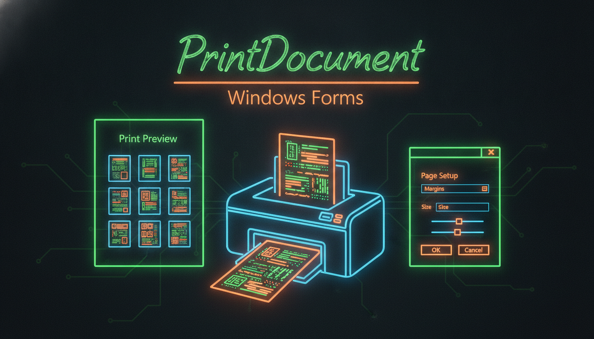

PrintDialog, PrintPreview, друк тексту/графіки

// Об'єкт друку
PrintDocument^ pd = gcnew PrintDocument();
pd->PrintPage += gcnew PrintPageEventHandler(
this, &MyForm::OnPrintPage);
// Діалог друку
PrintDialog^ dlg = gcnew PrintDialog();
dlg->Document = pd;
if (dlg->ShowDialog() == DialogResult::OK) {
pd->Print();
}
// Попередній перегляд
PrintPreviewDialog^ preview = gcnew PrintPreviewDialog();
preview->Document = pd;
preview->ShowDialog();
// Обробник друку
void OnPrintPage(Object^ sender, PrintPageEventArgs^ e) {
Graphics^ g = e->Graphics;
Font^ font = gcnew Font("Arial", 12);
// Друк тексту
g->DrawString(textBox->Text, font, Brushes::Black,
e->MarginBounds);
// Друк графіки
g->DrawRectangle(Pens::Black, 100, 100, 200, 150);
e->HasMorePages = false;
}